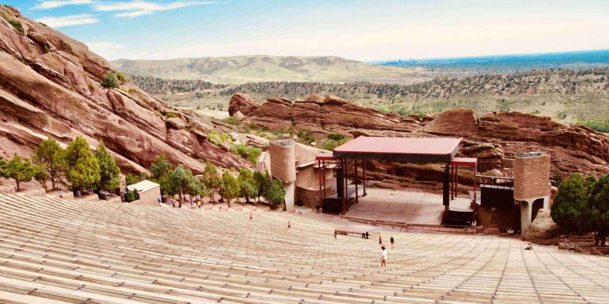

I love playing golf with friends and family. I grew up with a family that plays golf and started to really play in Middle School. I was on my High Schools varsity golf team and got to play in different courses throughout New Jersey.I've been playing for over 5 years and want to teach my family in the feature to pass down the tradition. I also love to run as I also did track and field in High School. I'm a big wrestling fan and will not stop talking about it if the subject comes up.
I love to try all sorts of food. Everytime I go somewhere with friends and family, I always need to eat because I love to learn about other cultures and what they incorporate in their dishes. I'm big on watching cooking compition shows such as Iron Chef, Street Foods, Chopped and ect. It's gives me the motivation to go out of explore other cuisines that's around.My top 5 favorite cuisine is Korean, Indian, Filipino, Thai, and Italian.
Traveling is my go to favorite thing to do because I get to explore different cultures. Whenever I travel, I always look forward to the food and tourist spots. I traveled to Colorado, Florida, North Carolina, Chicago, Dominican Republic, Las Vegas and many more. One of the bucklist is to travel all around Asia and go to tourist spots and really learn about history and how their lifestyle are.
Technology is big for me because it's very interesting there's many different kinds out there. I love being hands on so during quarantine I had the opportunity to build my PC. At that point it was very hard to get parts and had to camp out at different tech stores just to get a GPU. Although it was stressful, I really had a great time learning about different components of the PC and problem solves on why a certain port didn't work. When it comes to technology I'm always the go to person since I'm so fimilar with different technology such as smartphones, tablets and computers.